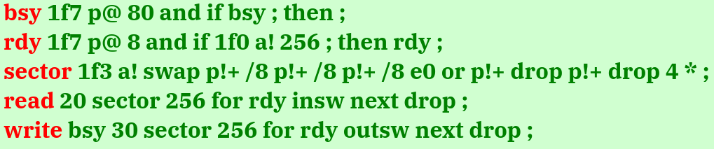

What’s Forth?
“What is Forth? I have hoped for some time that someone would tell me what it was. I keep asking that question. What is Forth?”
–Chuck Moore, inventor of Forth.
In the late 1960s an American programmer named Chuck Moore invented something that has recently become lodged in my brain for reasons I don’t understand. That something is called Forth. It’s a language and an operating system. It’s launched or flown spacecraft bearing the stars and stripes, the hammer and sickle, and the circle of stars. It bootstrapped the Macintosh. It guides both radio telescopes and missiles. It has no types and no syntax. Its creator claims a Forth program requires 1% of the code of an equivalent program written in C. I’ve gone down the rabbit hole, I don’t think I understand it, but it just won’t leave me alone.
Definitions
Forth has a depth of history that makes writing about it intimidating, even from the point of view of a casual observer. To begin with, Forth isn’t any one product. There’s commercial implementations, a GNU implementation, endless implementations by individuals for personal use… I say implementation, but that’s not quite the word. There’s a published standard, sure, but that’s not what Forth is. Chuck Moore’s Forths (of which there are many) don’t follow it. So what is it?
Here are a few definitions. First, from the venerable comp.lang.forth FAQ:
Forth is a stack-based, extensible language without type-checking. It is probably best known for its “reverse Polish” (postfix) arithmetic notation, familiar to users of Hewlett-Packard calculators … Programming in Forth consists of defining new words in terms of existing ones.
Chuck Moore’s unpublished 1970 book on the subject contains this definition:
It is a specific program; that is, a program with a specific structure and capabilities. In particular, it is a program that can be expanded from simple to complex along a well defined path, to handle a wide range of problems, likewise varying from simple to complex.
Another definition from Chuck:
I don’t know anything else to say except that Forth is definitions. If you have a lot of small definitions you are writing Forth. In order to write a lot of small definitions you have to have a stack.
So it’s a language standard with no types and no syntax, or it’s some kind of extensible program, or it’s nothing but a lot of small definitions. Yeah, that’s real clear. This is going well.
The truth is that when we talk about “Forth” we are most often talking about “a Forth,” one Forth of many Forths. It is a category of things; a type of expandable interpreter that implements any control language the operator may dream up by defining a small set of words, and more words from those words, and so on, all the way from bare metal to a fully functional system with terminal I/O, disk drivers, a text editor, and anything else it might need. Beyond the use of a parameter stack and postfix notation, what Forths have in common is this philosophy.
A “control language” or “application-oriented language” is a term used in older Forth literature for something we might these days call a domain-specific language (DSL); a programming language designed for a more narrowly-defined application than a general-purpose language – think SQL or AWK. Leo Brodie’s classic text Thinking Forth describes Forth in these terms:
Forth is a programming environment for creating application-oriented languages. … you shouldn’t write any serious application in Forth; as a language it’s simply not powerful enough. What you should do is write your own language in Forth … to model your understanding of the problem, in which you can elegantly describe its solution.
And that’s what Forth is: countless small definitions, from the bottom up in layers of increasing abstraction, not worrying about things like scope or parameter passing, until you have defined the perfect, minimal language to describe the application you want to build and nothing more.
The Game of Life
Conway’s Game of Life is a whole different rabbit hole which I won’t cover in detail here. It’s one example of a type of cellular automaton played out across a two-dimensional grid of cells which change state according to a set of simple rules based on the state of the surrounding cells. These cellular automata fascinated programmers in the 1970s, so it’s fitting to explore them with Forth.
Celt is a tool for simulating cellular automata in toroidal space (think the surface of a doughnut). It can handle rules with multiple generations and can use either the Moore or Von-Neumann method to calculate a cell’s neighbourhood. The code is, I hope, an effective example of the way a Forth program is built up by definitions of small words toward the user interface (which in this case is simply the Forth REPL, as is traditional).
The most basic word prints a single cell to the terminal. It adds 32 to the state number to get an ASCII character in the printable range, with cells in state 0 printed as spaces:
: PRINT-LIFE-CELL 32 + EMIT 32 EMIT ;This is then used to print the entire grid:
: PRINT-GRID PAGE ." Generation " CURRENT-GENERATION ? CR GRID-WIDTH 0 DO 45
EMIT 45 EMIT LOOP GRID-LENGTH 0 DO I GRID-WIDTH MOD 0= IF CR THEN GRID I + @
PRINT-LIFE-CELL LOOP CR ;That definition is actually longer than is considered ideal. In fact, the Forth philosophy suggests the entire program could do with more of what Forth programmers call “factoring,” the process of splitting up definitions into their smallest reusable parts. This goes against all my instincts as a C programmer because C programmers like to avoid the overhead of function calls. Forth has no such overhead.
The word invoked by the user to run the simulation is GENERATIONS:
: GENERATIONS 0 DO NEW-GENERATION PRINT-GRID 500 MS KEY? IF LEAVE THEN LOOP ;You tell the computer “30 GENERATIONS” and you get them, 500ms apart. How is a new generation calculated?
: NEW-GENERATION GRID-LENGTH 0 DO I APPLY-RULE LOOP 0 GRID-LENGTH 1 - DO I GRID
+ C! -1 +LOOP CURRENT-GENERATION @ 1+ CURRENT-GENERATION ! ;In C, applying cellular automata rules usually requires two copies of the memory in which the grid of cells is stored. You either copy one to the other or swap a pointer like the double-buffered rendering used in graphics programming. Not so in Forth, where the parameter stack allows passing arbitrary data from one word to the next which will consume what it needs and leave the rest.
Rather than go through every word in the Celt lexicon, I’d like to show you one last piece of Forth code. This is a driver for an IDE hard disk written by Chuck Moore in a Forth called ColorForth, which uses coloured text where other Forths use punctuation (because Chuck’s eyesight isn’t what it used to be):

That’s not some equivalent of a C “main” function, that’s the entire thing. Chuck is known for railing against complexity in software and the above demonstrates why.
Brain Worms
There’s so much I’ve not covered here. I haven’t mentioned Chuck’s Forth-based microprocessors at all, or gone anywhere near the long history of debate and discussion taken up by Forth’s committed followers. I’ve neglected to acknowledge Elizabeth Rather, the second-ever Forth programmer, co-founder of FORTH, Inc. and chair of the committee that produced Forth’s first language standard. Forth’s history is far too long to cover properly here.
Why did this amorphous, unorthodox 1970s programming methodology wriggle its way into my brain so effectively? The epilogue to Leo Brodie’s Thinking Forth contains this quote, attributed to Michael Ham:
Forth is like the Tao: it is a Way, and is realized when followed. Its fragility is its strength; its simplicity is its direction.
This was the winning entry in a competition to describe Forth. As I write this, I realise attempting to puzzle out the true nature of Forth is a popular pastime of those chosen as hosts by the Forth brain worms. Forth’s ability to change how a programmer views programming, or even problem-solving in general, is often cited. Once it gets in it doesn’t let go.
What’s Forth? Well, they say the only way to truly understand Forth is to implement a Forth of your own…